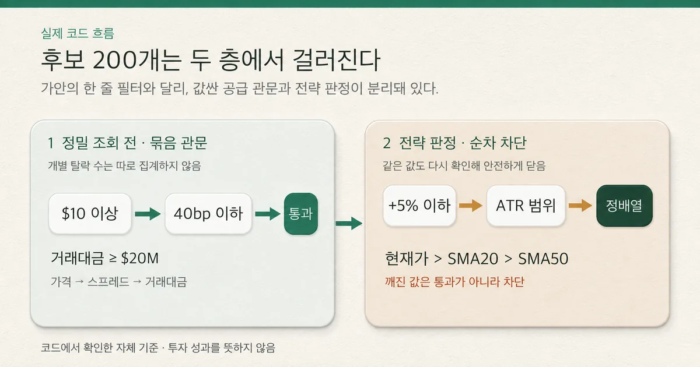
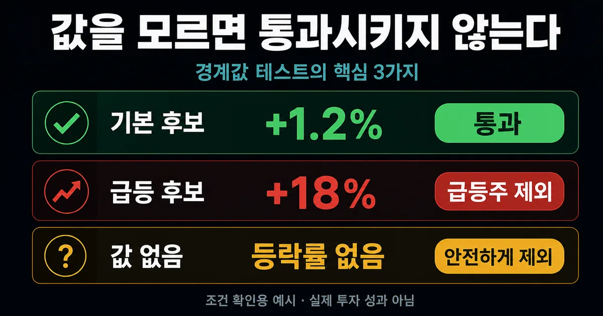

2026. 8. 29 (토) · 약 11분
후보 200개를 모았지만, 어떤 순서로 탈락시킬지는 더 어려웠다. 가격이 싼 종목을 먼저 빼면 되는지, 거래대금과 스프레드 중 무엇을 앞에 둘지부터 애매했다. 당일 크게 오른 종목은 점수가 좋아 보였고, 정배열은 추세가 이어질 것처럼 보였다. 하지만 눈에 띄는 종목과 실제로 분석할 수 있는 종목은 같지 않았다. 그래서 edgelab의 실제 코드와 경계 테스트를 다시 대조해 관문을 두 층으로 나눴다.
프로젝트 제작기
개발 기록 · 개인 프로젝트 기록 · 공개 자료 참고 · 2026. 8. 29
주식 선정 알고리즘: 급등주를 빼고 정배열을 보는 기준
후보 200개를 가격·스프레드·거래대금의 공급 관문과 급등·ATR·SMA20·SMA50의 전략 관문으로 나눠 탈락시키는 edgelab의 실제 코드, 경계 테스트, 결측값 수정 기록을 정리했다.
후보 200개를 모은 다음이 더 어려웠다
이전 편에서 랭킹 80개와 종목 마스터 순환 120개를 합쳐 후보 200개를 만들었다. 이제는 그중 무엇을 먼저 버릴지가 문제였다. 가격이 싼 종목을 먼저 빼면 되는지, 거래대금과 스프레드 중 어느 값을 먼저 봐야 하는지부터 애매했다.
당일 크게 오른 종목은 점수가 좋아 보였고, 현재가>SMA20>SMA50 정배열은 추세가 이어질 것처럼 보였다. 그러나 눈에 띄는 종목과 실제로 분석할 수 있는 종목은 같지 않았다.
처음에는 가격 → 유동성 → 스프레드 → 급등 제외 → 정배열을 한 줄짜리 깔때기로 만들면 된다고 생각했다. 실제 코드를 다시 따라가 보니 구조가 달랐다. 값싼 단계에서 비싼 정밀 조회를 쓸 후보를 줄이는 관문과, 정밀 지표가 준비된 뒤 전략 가설을 판정하는 관문이 따로 있었다. 이번 질문은 ‘어떤 종목이 오를까’가 아니라 ‘어떤 값을 모르는 채 다음 단계로 넘기면 안 될까’로 바뀌었다.
후보 200개에서 급등주와 거래하기 어려운 종목을 어떤 기준으로 빼고, SMA20·SMA50 정배열은 어디에서 확인해야 할까?
실제 구현은 한 줄 필터가 아니라 두 층이다
첫 층은 후보 공급 관문이다. 개별주 S1에 정밀 일봉과 호가 분석을 더 쓸 가치가 있는지 판단한다. 코드의 조건식은 보통주인지 확인한 뒤 가격 10달러 이상, 스프레드 40bp 이하, 당일 거래대금 2천만 달러 이상을 함께 요구한다. 조건을 통과한 종목은 랭킹 출신과 순환 출신으로 나눠 유동성 순으로 정렬한다. 이 단계는 매수 신호가 아니라 분석 예산을 배분하는 경계다.

두 번째 층은 전략 판정이다. 정밀 조회에서 현재 가격과 호가, 완결 일봉을 받아 등락률과 SMA20·SMA50를 계산한 뒤 같은 가격·스프레드·거래대금 조건을 다시 확인한다.
그 다음 당일 +5% 초과 급등, ATR 범위, 현재가>SMA20>SMA50 구조를 차례로 본다. 같은 값을 두 번 확인하는 것은 중복처럼 보이지만, 두 시점의 값이 어긋나거나 깨졌을 때 조용히 통과시키지 않는 안전장치다.
가격·유동성·스프레드는 같은 질문이 아니다
10달러 가격 하한은 싼 주식이 나쁘다는 선언이 아니다. 현재 S1의 주문 규모와 최소 호가 단위를 고려했을 때 가격이 낮을수록 1센트 차이가 차지하는 비율이 커지는 비용 경계다.
40bp는 (매도호가-매수호가)/중간가격×10,000으로 본 상대 스프레드 상한이다. 거래대금 2천만 달러는 하루에 실제로 돈이 얼마나 오갔는지를 보는 별도 유동성 관문이다. Investor.gov도 bid와 ask의 차이를 spread라고 설명한다.
문턱 바로 바깥을 테스트했다
| 단계 | 확인 값 | 현재 코드 기준 | 확인 가능한 증거 |
|---|---|---|---|
| 후보 공급 | 가격 | $10 이상 | $9.99 경계 테스트 |
| 후보 공급 | 스프레드 | 40bp 이하 | 41bp 경계 테스트 |
| 후보 공급 | 거래대금 | $20M 이상 | $19,999,999 경계 테스트 |
| 전략 판정 | 당일 등락률 | +5% 초과 제외 | +18%·NaN 차단 테스트 |
| 전략 판정 | 가격 구조 | 현재가>SMA20>SMA50 | 통과 픽스처와 지표 계산 테스트 |
Amihud의 유동성 연구는 절대수익률을 달러 거래량으로 나눈 값으로 가격 충격을 근사했다. 이 연구가 edgelab의 2천만 달러나 40bp를 정답으로 준 것은 아니다. 다만 거래대금과 스프레드가 서로 다른 유동성 측면을 보여 주며 한 숫자로 대체하면 안 된다는 질문을 제공했다. 현재 문턱은 앱의 데이터 공급과 모의체결 조건에 맞춘 시험값이다.
+5%는 좋은 종목을 버리는 규칙이 아니다
급등 제외 관문은 +5%보다 많이 오른 종목이 반드시 떨어진다는 예측이 아니다. 후보 수집에는 상승률 랭킹이 있어 주목이 집중된 종목이 자주 섞인다. Barber와 Odean은 뉴스·비정상 거래량·극단적 하루 수익률처럼 눈에 띄는 종목에 개인투자자의 매수가 쏠리는 현상을 확인했다. edgelab은 연구의 수치를 복사하지 않고 추격을 매수 근거로 삼지 않기 위한 자체 경계로 +5%를 둔다.
여기서 예상 밖 결함이 하나 나왔다. 초기 코드는 등락률이 NaN이면 ‘+5%보다 큰가’를 확인하지 못한 채 관문을 건너뛰었다. 모르는 값이 ‘오르지 않은 값’처럼 취급된 셈이다. 2026-08-26 수정에서는 비유한 등락률을 큰 경고값으로 바꿔 급등 관문이 닫히도록 했고, 회귀 테스트로 다시 막았다. 이번 회차의 판단이 단순 채택이 아니라 수정 후 채택인 이유다.

정배열은 미래 수익이 아니라 현재 구조의 이름이다
SMA20과 SMA50는 완결된 일봉 종가로 계산한다. 최소 50개의 완결 봉이 없으면 지표를 만들지 않고, 현재 가격이 SMA20보다 높고 SMA20이 SMA50보다 높을 때만 S1의 정배열 조건을 만족한다. 장중 현재 가격과 과거 완결 봉 평균을 섞는 이유와 한계도 분명하다. 이 조건은 지금 가격이 단기·중기 평균 위에 있다는 구조 설명이지 다음 날 상승을 보장하는 예언이 아니다.
Brock·Lakonishok·LeBaron은 이동평균과 거래범위 규칙을 긴 다우지수 표본에서 검정했다. 그 논문은 이동평균 규칙을 연구할 질문을 제공하지만, SMA20·SMA50 조합이나 개별주 S1의 성과를 대신 증명하지 않는다. 이 앱의 기간과 순서는 코드·테스트·리플레이에서 확인해야 하며, 이번 편은 후보 구조까지만 다룬다. 실패 기준과 청산 결과는 다음 회차의 질문으로 남긴다.
현재 서버에서는 필터 성과와 체결 결과를 같은 숫자로 읽지 않는다.
읽기 전용 모의투자 기록에는 S1 설정 관문을 통과한 판단 152건 중 142건이 진입으로 이어지지 않은 구간이 있다. 원인은 호가 깊이·정수주·현금 부족 같은 체결층 거부였다. 이를 필터 성과로 읽으면 안 된다. 현재 가격·스프레드·거래대금 관문별 후보 수가 따로 없어 그 숫자는 만들지 않았다.
내 스크리너에 남길 다섯 가지 기준
- 공급 관문과 전략 관문을 분리한다 — API 비용을 줄이는 규칙과 수익 가설을 같은 점수에 섞지 않는다.
- 가격, 거래대금, 스프레드를 각각 기록한다 — 서로 다른 거래 가능성 질문을 한 값으로 대신하지 않는다.
- 급등률은 추격 위험의 경계로 쓴다 — 높은 점수나 상승 예측으로 해석하지 않는다.
- 이동평균은 완결 봉으로 계산한다 — 정배열을 현재 구조의 이름으로만 사용한다.
- 결측값은 닫아서 막고 관문별 카운터를 남긴다 — 모르는 값을 통과로 해석하지 않고 실제 병목을 나중에 측정한다.
결론은 수정 후 채택이다. 가격 10달러, 스프레드 40bp, 거래대금 2천만 달러, 당일 +5%, SMA20·SMA50 관문은 현재 S1 입력을 만드는 기준으로 유지한다. 대신 한 줄짜리 순차 필터라는 설명은 버리고, 두 층의 책임과 결측값 차단을 명시한다. 관문별 실제 전후 후보 수를 기록하는 일은 남은 개선 과제다.
이전 글 ‘좋은 주식은 어떻게 고를까?’에서 후보 200개를 모으는 방법을 다뤘다면, 이번 글은 그 후보를 실제 분석 입력으로 줄이는 방법을 다뤘다. 다음 질문은 더 많은 종목을 통과시키는 방법이 아니다. 수익보다 먼저 실패 기준을 정해야 하는 이유는 무엇일까?
이 글은 실주문 경로가 없는 미국주식 선정 소프트웨어의 구현 기록이며 투자 자문이나 종목 추천이 아니다. 코드·테스트·모의투자 기록은 실제 투자 성과를 보장하지 않는다.
참고한 자료
현재의 답은 한 줄짜리 점수표가 아니다. 정밀 조회 전에는 가격·스프레드·거래대금을 묶어 비싼 데이터 요청을 쓸 대상을 줄이고, 전략 판정에서는 당일 +5% 초과와 깨진 등락률을 막은 뒤 SMA20·SMA50 구조를 확인한다. 관문은 수정 후 채택했지만 관문별 전후 후보 수를 기록하지 않는 한계는 남아 있다. 다음 편에서는 후보를 더 많이 통과시키는 문제보다 먼저, 어떤 결과를 실패로 정의해야 하는지 다룬다. 주식 스크리너를 설계할 때 데이터 비용을 줄이는 공급 관문과 전략 가설을 검증하는 판정 관문을 분리하고, 결측값은 통과시키지 않는다.